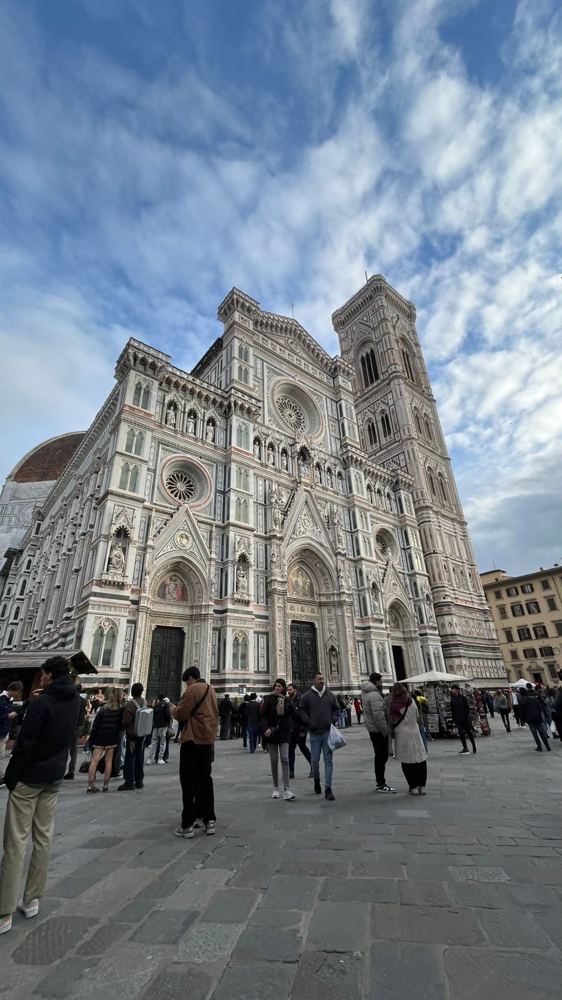
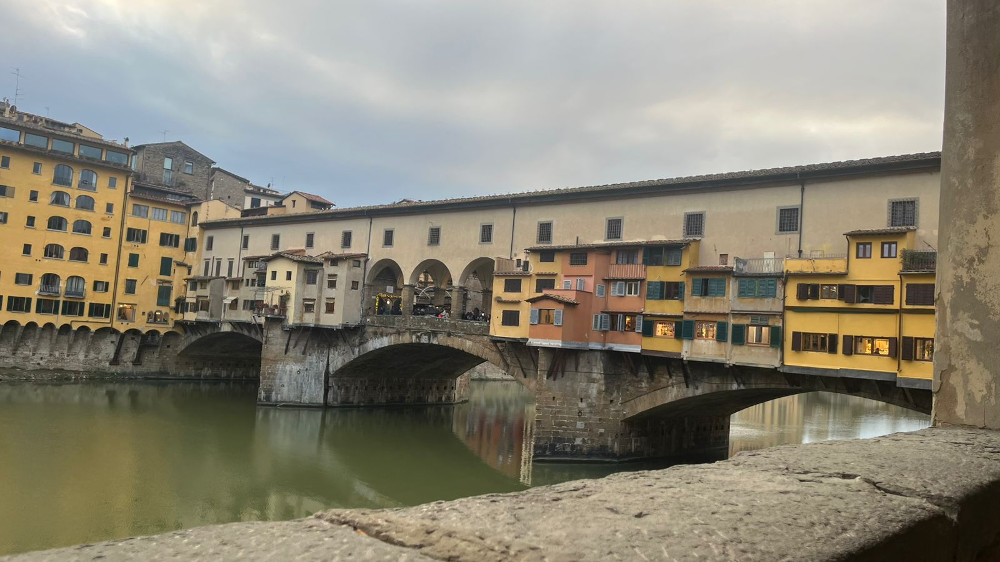
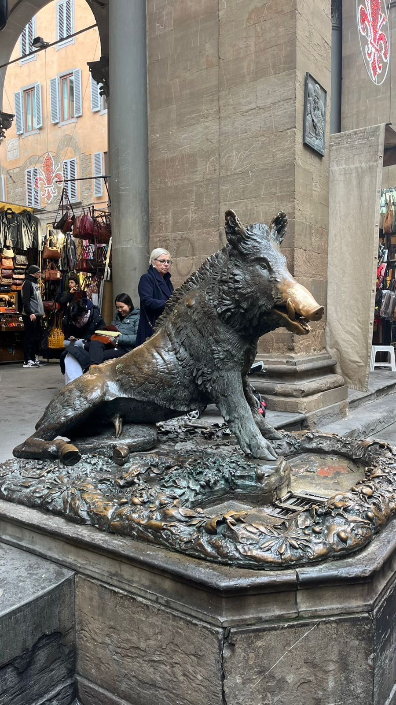
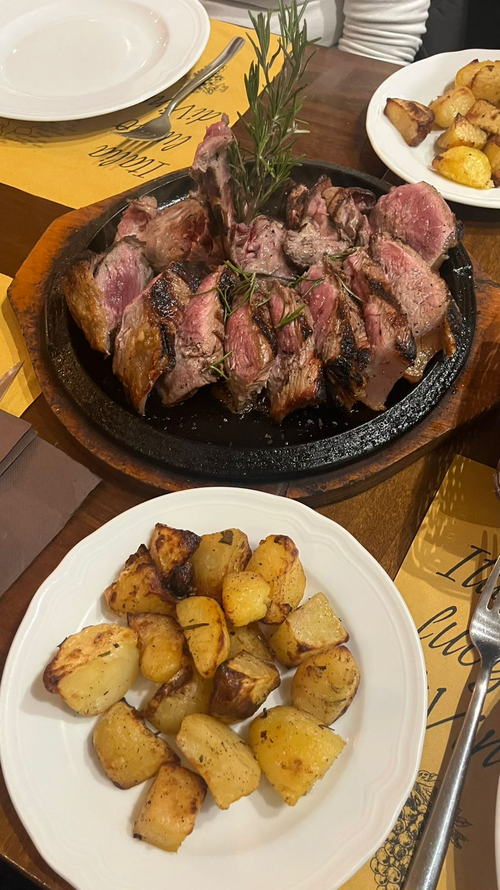
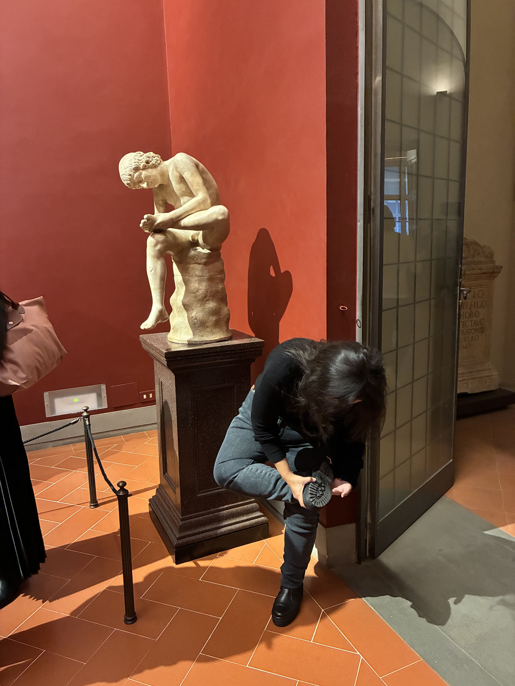
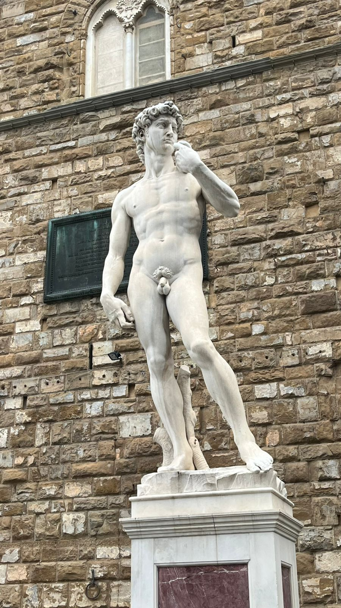
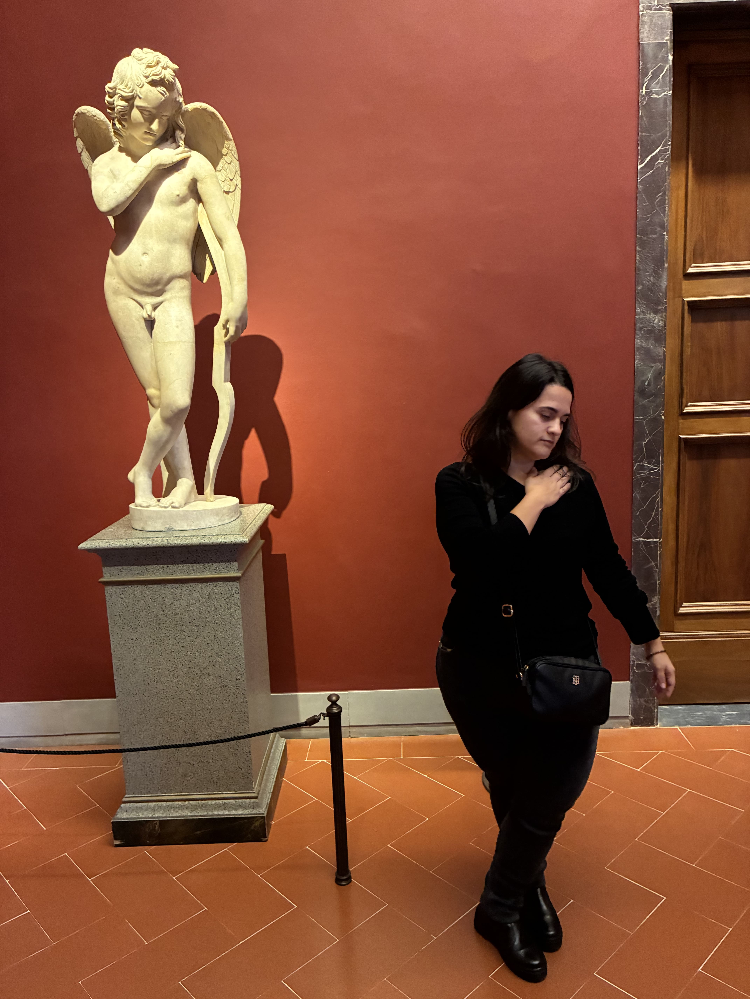
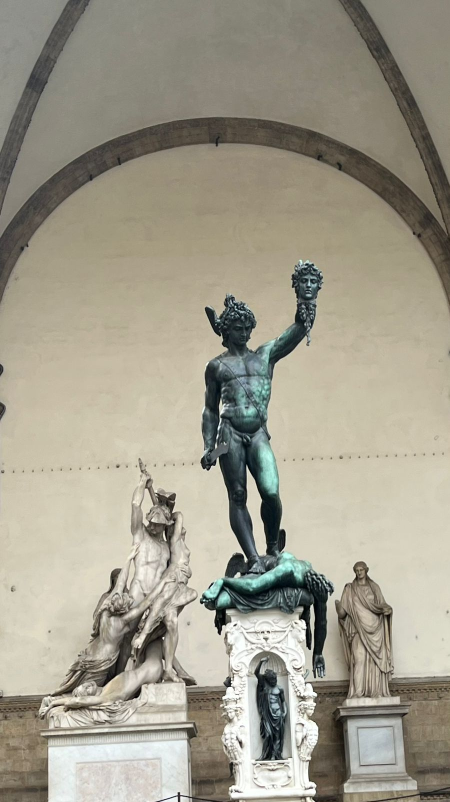
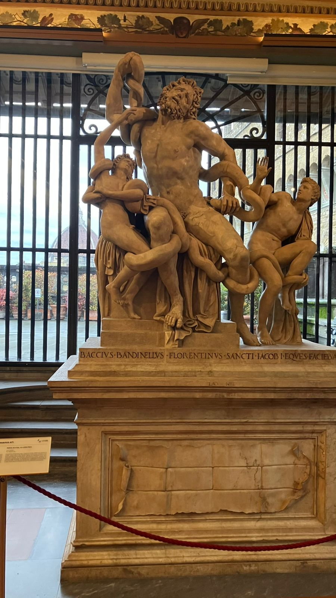
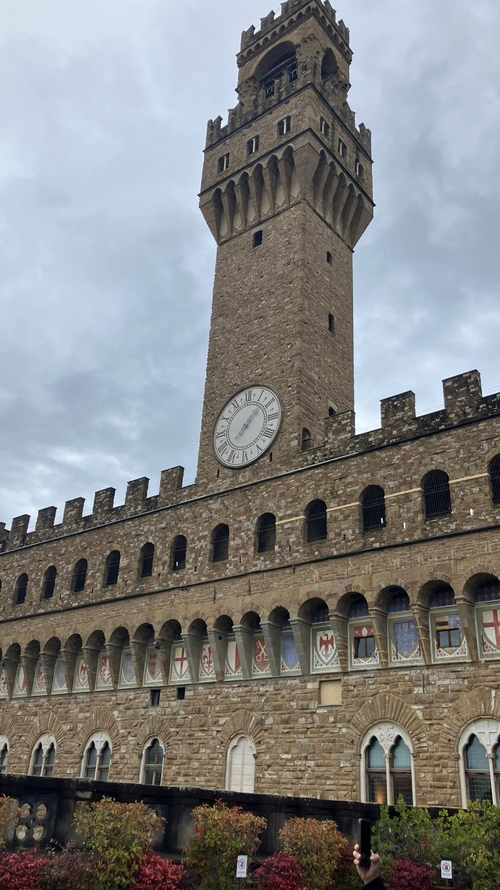

Florença
Florença é o berço do Renascimento e uma das cidades mais importantes da história da humanidade. Aqui nasceram ou viveram gênios como Michelangelo, Leonardo da Vinci, Dante Alighieri, Brunelleschi e Botticelli. Cada rua, praça e igreja guarda obras-primas que moldaram a cultura ocidental.
Além dos pontos turísticos famosos, Florença é um dos melhores lugares do mundo para simplesmente se perder pelas ruas estreitas, descobrir cafés escondidos, pequenas praças tranquilas e vistas inesperadas do Arno. A cidade recompensa quem explora sem pressa.










Milão → Florença
Saindo da Estação Central de Milão, pegue um trem de alta velocidade (Frecciarossa ou Italo) até Firenze Santa Maria Novella. A viagem dura cerca de 1h45 a 2h e custa entre 25 e 45 euros dependendo da antecedência.
Florença é uma cidade compacta e perfeita para explorar a pé. A estação já fica no centro histórico, então você começa o passeio imediatamente.
Pontos Turísticos Imperdíveis
Duomo de Florença (Santa Maria del Fiore)
A Catedral de Florença é uma das obras mais impressionantes da arquitetura mundial. Sua cúpula, projetada por Brunelleschi, foi um feito revolucionário para a época e continua sendo um símbolo da genialidade renascentista. A fachada em mármore verde, rosa e branco é de tirar o fôlego.
A entrada na catedral é gratuita, mas subir à cúpula custa cerca de 20 euros. A vista lá de cima é uma das mais bonitas da cidade. O Batistério e o Campanário também fazem parte do complexo e valem muito a visita.
Ponte Vecchio
A Ponte Vecchio é uma das pontes mais antigas da Europa e famosa por suas lojas de ourives. Durante a Segunda Guerra Mundial, foi a única ponte de Florença poupada pelos alemães — dizem que por ordem direta de Hitler.
Ao pôr do sol, a ponte ganha uma atmosfera mágica, com reflexos dourados no Rio Arno. É um dos lugares mais românticos da cidade.
Galeria Uffizi
A Uffizi é um dos museus mais importantes do mundo, com obras de Botticelli, Leonardo da Vinci, Michelangelo, Caravaggio, Rafael e muitos outros. É aqui que você encontra “O Nascimento de Vênus” e “A Primavera”, duas das pinturas mais famosas da história.
A entrada custa cerca de 20 euros. Recomenda-se comprar ingresso antecipado, pois as filas podem ser longas. A vista da varanda interna para o Rio Arno é maravilhosa.
Galeria da Academia (David de Michelangelo)
A Galeria da Academia abriga o original do “David”, de Michelangelo — uma das esculturas mais perfeitas já criadas. Ver a obra ao vivo é uma experiência impactante, muito diferente das fotos.
A entrada custa cerca de 16 euros. Além do David, o museu possui outras esculturas inacabadas de Michelangelo, chamadas “Prisioneiros”, que mostram seu processo criativo.
Palazzo Vecchio
O Palazzo Vecchio é a antiga sede do governo florentino e um dos edifícios mais importantes da cidade. Sua torre domina a Piazza della Signoria, onde estão réplicas de esculturas famosas, como o David.
É possível visitar o interior, que possui salas decoradas com afrescos e obras renascentistas. A subida à torre custa cerca de 12 euros e oferece uma vista incrível do Duomo.
Piazzale Michelangelo
O melhor mirante de Florença. Do alto da colina, você vê toda a cidade: o Duomo, o Palazzo Vecchio, o Arno e as colinas ao redor. É o lugar perfeito para fotos.
O pôr do sol aqui é um espetáculo. Dá para subir a pé, de ônibus ou de táxi.
Basílica de Santa Croce
Santa Croce é conhecida como o “templo das glórias italianas”, pois abriga os túmulos de Michelangelo, Galileo Galilei, Maquiavel e Rossini. A igreja é belíssima e cheia de história.
A entrada custa cerca de 8 euros. A praça em frente é charmosa e cheia de cafés.
Mercado Central de Florença
O Mercado Central é o lugar ideal para experimentar a culinária toscana. No térreo, você encontra produtos frescos, queijos, embutidos e massas. No andar superior, há dezenas de restaurantes com pratos típicos.
Experimente o famoso “panino al lampredotto”, um sanduíche tradicional florentino. É simples, barato e muito local.
Basílica de San Lorenzo
San Lorenzo é uma das igrejas mais antigas de Florença e está ligada diretamente à família Medici. Sua fachada simples contrasta com o interior riquíssimo e com as Capelas dos Medici, onde estão os túmulos da família.
A entrada custa cerca de 9 euros. As Capelas Medici são um destaque à parte.
Gastronomia em Florença
Bistecca alla Fiorentina
A bistecca é o prato mais famoso da cidade: um corte enorme de carne, servido mal passado e sempre compartilhado. É uma experiência gastronômica obrigatória.
Os melhores lugares costumam ser fora das áreas mais turísticas.
Pappardelle al ragù di cinghiale
Massas largas com ragù de javali, um clássico da Toscana. Sabor intenso e muito tradicional.
Perfeito para quem gosta de pratos mais rústicos.
Sobremesas
Florença tem ótimos gelatos artesanais. Sabores como pistache, nocciola e stracciatella são sempre uma boa escolha.
Experimente também o “cantucci com vin santo”, clássico toscano.
Dica dos Ussinhos 🐻💡
Florença é uma cidade para ser vivida com calma. Entre em igrejas pequenas, sente-se em praças, caminhe sem destino. A cidade revela sua beleza nos detalhes.
Se puder, fique até o pôr do sol no Piazzale Michelangelo. É uma das vistas mais bonitas da Itália.